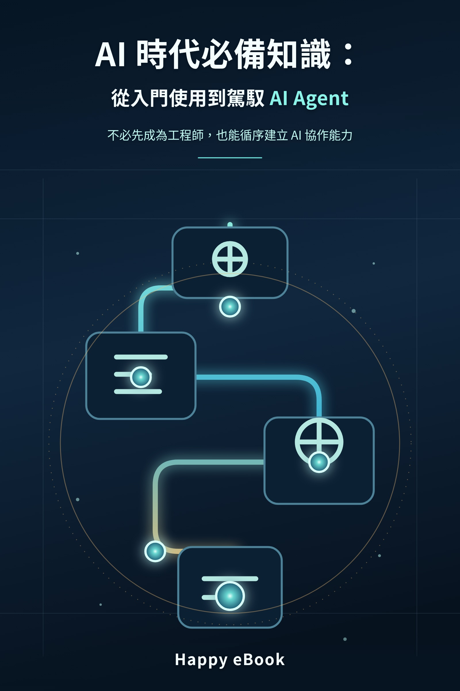

電子書
AI 時代必備知識：從入門使用到駕馭 AI Agent
電子書介紹

AI 時代必備知識：從入門使用到駕馭 AI Agent
電子書介紹
《AI 時代必備知識：從入門使用到駕馭 AI Agent》是由 Happy eBook Authors 撰寫的電子書，提供完整實作與學習內容。
這本書適合誰？
這本書適合想從「偶爾用 AI」進展到「能駕馭 AI Agent」的一般讀者、教師與知識工作者。書名說的是必備知識，實際上處理的是判斷力：什麼該交給代理、什麼必須自己看住。
你會學到什麼
- 建立 AI 工具與 Agent 的基本地圖，知道不同工具適合的任務類型與限制。
- 從單次提問進展到多步驟任務：拆目标、設檢查點、保留人工覆核。
- 辨識常見風險，包括資料外洩、模型幻覺與過度信任代理的輸出。
- 把代理放進自己的學習或工作流程，並用成果而不是工具名稱來衡量效果。
怎麼搭配本站內容
本站的〈高中生如何開始理解 AI 資安？〉從帳號、隱私、幻覺與提示注入切入，可作為這本必備知識中風險意識的入門前讀。
In English: A map-style guide from first AI use to orchestrating AI Agents, covering tool selection, multi-step task design, human checkpoints, data privacy, and hallucination risks. An original reading guide by Happy eBook.